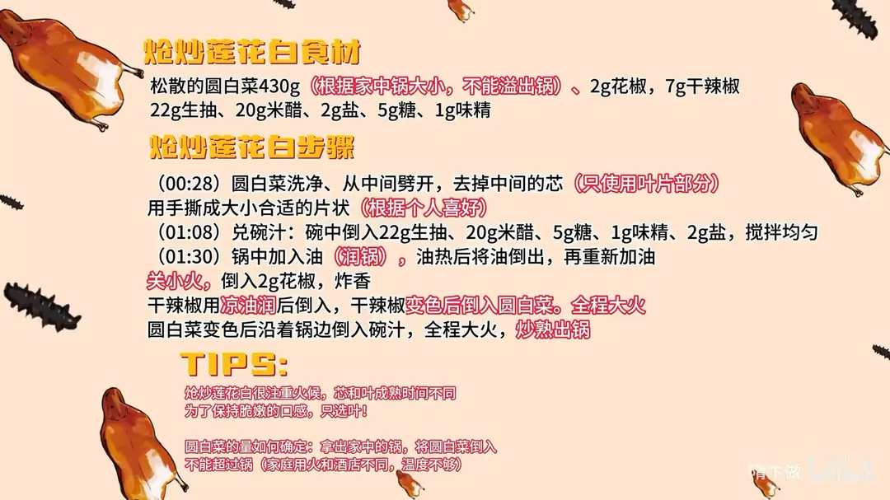

炝炒莲花白
隋卞一做。松散圆白菜 430g 只取叶片手撕，量以倒进锅里不溢出为准；2g 花椒、7g 干辣椒热油炝香，全程大火，沿锅边倒入 22g 生抽、20g 米醋兑的碗汁，炒熟即出锅。
原视频：https://www.bilibili.com/video/BV1Qx4y1r7F5
食材
圆白菜、花椒、干辣椒 等 8 样
| 类别 | 用料 | 用量 |
|---|---|---|
| 主料 | 圆白菜（松散） | 430g |
| 香料 | 花椒 | 2g |
| 香料 | 干辣椒 | 7g |
| 碗汁 | 生抽 | 22g |
| 碗汁 | 米醋 | 20g |
| 碗汁 | 糖 | 5g |
| 碗汁 | 味精 | 1g |
| 碗汁 | 盐 | 2g |
步骤
- 手撕包菜：圆白菜洗净，从中间劈开，去掉中间的芯，只使用叶片部分，用手撕成大小合适的片状（根据个人喜好）。
- 兑碗汁：碗中倒入 22g 生抽、20g 米醋、5g 糖、1g 味精、2g 盐，搅拌均匀。
- 润锅炝料：锅中加入油润锅，油热后将油倒出，再重新加油；关小火，倒入 2g 花椒炸香；干辣椒用凉油润后倒入，干辣椒变色即可。
- 大火快炒：干辣椒变色后倒入圆白菜，全程大火；圆白菜变色后沿着锅边倒入碗汁，继续大火，炒熟出锅。
小贴士
- 炝炒莲花白很注重火候，芯和叶成熟时间不同；为了保持脆嫩的口感，只选叶。
- 圆白菜的量怎么定：拿出家里的锅，把圆白菜倒进去不能溢出锅（家庭用火和酒店不同，温度不够）。
讲解要点
难度：★★★☆☆（步骤简单，难在家用火力下判断出锅时机，差一点就是绵软出水）
为什么这么做
- 只取叶片、不要菜杆：杆和叶的成熟时间不一样，一起下锅时叶子已经过火、杆还没熟，只选叶才能一路保持脆嫩。
- 圆白菜不能超过锅的容量：家里火没有酒店火那么冲，菜太多了下锅后温度下降特别快，出菜口感就绵了。
- 碗汁要提前兑好：生抽、米醋、糖、味精、盐一次调匀放在旁边，倒进去就出锅，锅里时间越短越不出水。
- 花椒先小火炸香，再下辣椒：花椒要香不要糊，小火出香；干辣椒先用凉油润一下再下锅，不容易一下锅就焦。
- 全程大火：这道菜靠的是锅气，火一小就成了「煮」圆白菜，出水、发软都从这里来。
- 汁沿锅边倒：沿着热锅边倒，醋香先被高温激出来，比直接倒进菜中间更香、更干爽。
- 辣椒一变棕红就下菜：香料在油里多待一会儿就苦，颜色到了就是信号，下菜要快。
容易翻车
- 圆白菜洗完带水就下锅，锅温立刻掉，炒出来是水煮白菜；洗完沥干、甩干水再炒。
- 花椒、辣椒炸过头会发苦，宁可不香也别炸黑。
- 菜量超过锅，或者中途频繁翻动，温度掉下来就出水。
- 碗汁倒入后要大火快翻、尽快出锅，拖着不出锅同样出水。
热评补充
- 家里火小、锅薄的话，可以先把圆白菜拌一点油，微波炉转 2 分钟，翻一下再转 1 分半，让菜带点底温再下锅爆炒，更容易做到不出水、火候也好掌握。
原片尾卡

原片文案
AI 字幕校准稿
这个菜从账号建立到现在，真的是教大家心里最没底的一道菜。往简单说，它就是一盘炒圆白菜；可它偏偏是北京饭店的镇店菜之一。从这些角度上讲，这道菜比油爆双脆、比折花都要更难。
莲花白是四川那边的一种圆白菜，你们在家买那种苏式圆白菜就行。挑的时候看中间的芯比较松弛，这种菜叶嫩。杆不要，这个选材是很讲究的，只选叶。
因为这个菜特别注重火候，杆跟叶成熟时间不一样——杆还没熟，叶已经过火了，所以要只取叶。
量多少合适？把你家那口锅拿过来，菜往上一倒，不能超出这锅。家里火没有酒店火那么冲，菜太多了下锅以后温度下降特别快，出菜的时候会影响口感。
一定要提前把碗汁兑好：生抽、米醋、糖、味精、盐。放多少你们不用记，全都放到片尾。
前面的工作准备完，咱们就开始上锅炒。锅里放点油，把锅润一下；来勺油，把花椒倒进去，关小火炸香。再少加一点凉油，把辣椒倒进去，辣椒变成棕红色，圆白菜就下锅，全程大火。
菜和辣椒一变颜色就可以倒汁了，把碗汁沿着锅边倒进去。好了，出锅。
首先酱的味道就出来了，然后麻辣，最绝的就是这个原版菜的口感，是那种似脆非脆、似软非软，刚好卡在临界点上。
为什么北京饭店的就好吃？这道菜太经验主义了——锅子大小、圆白菜的湿度、你家里火的大小，再加上圆白菜的多少，这些不同决定它什么时候出锅。今天你们要做到两点：第一是汁的配比，第二是圆白菜的量一定不能超过锅。这两点做好，最起码是 80 分以上的炒圆白菜。
从 80 分到 100 分，就得靠你们一点一点经常去练。我之前为了练这个菜，也得练个几十斤。去北京饭店之前我不太爱吃圆白菜，就因为这一个是菜让我爱上了这个蔬菜。